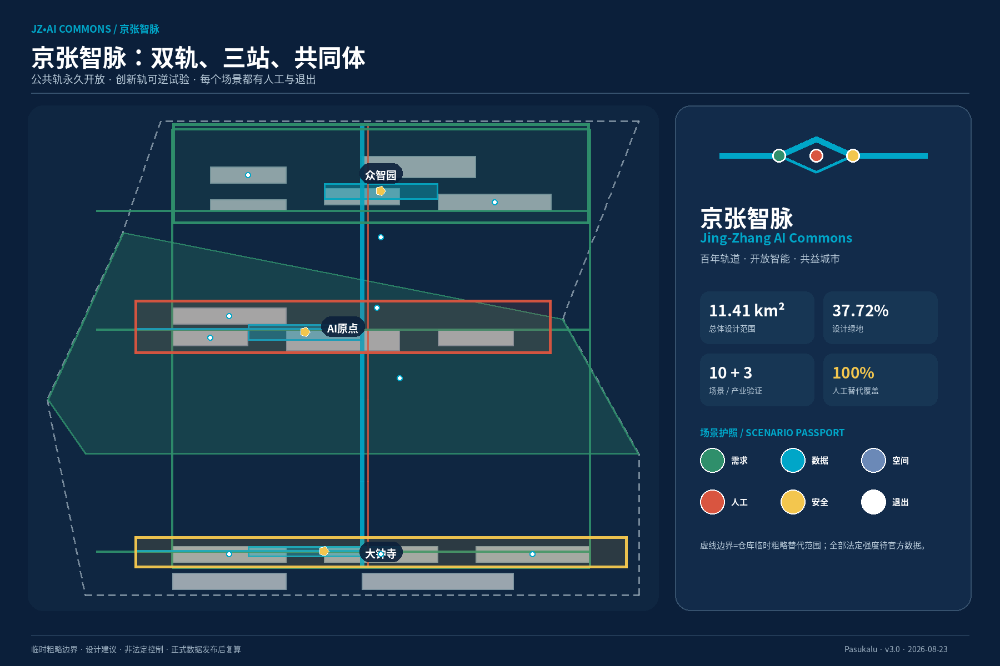
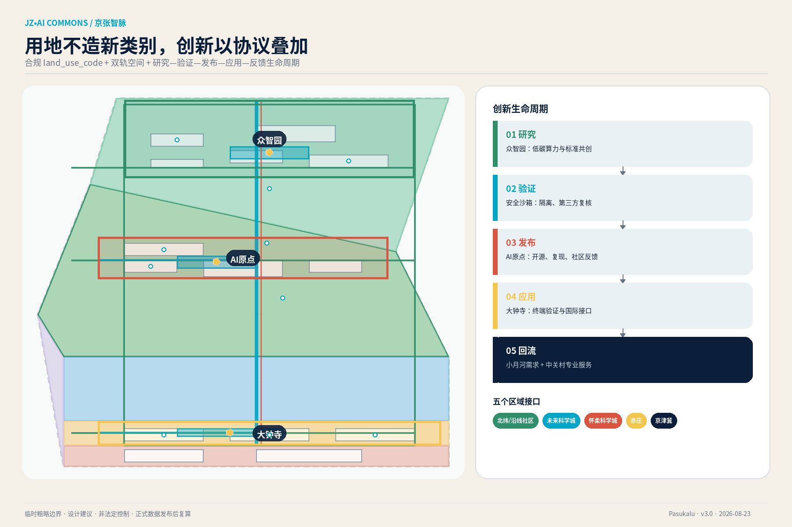
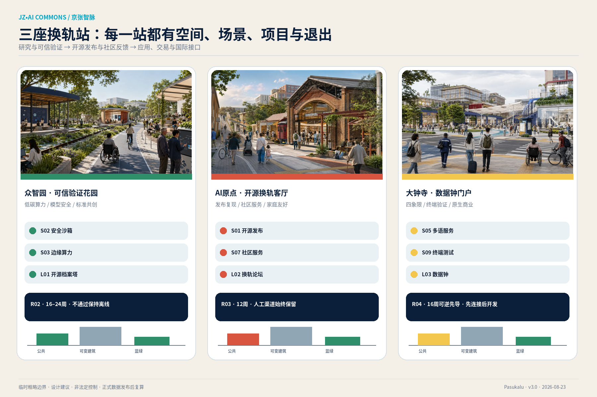
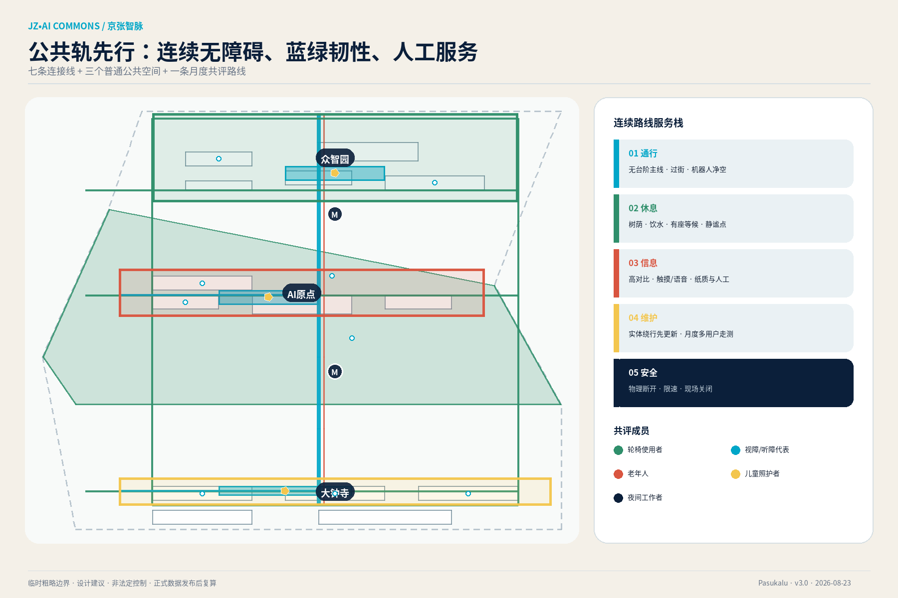
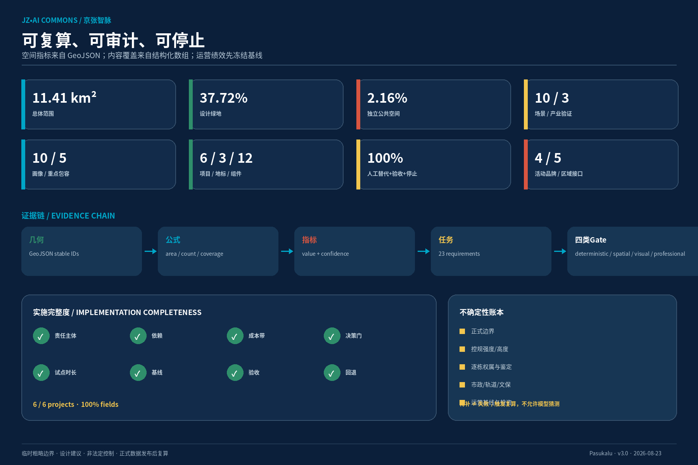

S01公共场景
开源发布厅
空间：BLDG-006 + PUBLIC-002；可拆分演示厅、安静复现室、人工咨询台。
验收：≥80% 发布包由独立志愿者完成复现；100% 活动提供字幕/文字稿和无台阶席位；严重安全或版权事件=0
人工、回退与停止
发布责任人签字、现场主持人纠错、人工登记通道。
纸质日程、人工报名、线下资料台和无需注册的观看席。
未授权数据/代码、连续两次无法复现或安全问题未闭环时暂停。
公共轨永久开放，创新轨可逆试验。三座换轨站让研究、公众反馈与应用共享一套六门城市契约。
双轨、三站、两翼、多点场景和蓝绿公共环；虚线边界明确为临时粗略替代范围。

八个案例只提取可验证机制；五个外部接口均为概念建议，不代表伙伴承诺。

每站都有空间、场景、项目、人工责任、验收与退出。以下图像是AI生成概念图，不是场地证据。



沙箱→受限试点→独立复核→扩大、修正或日落。所有场景都有人工与非数字替代。
空间：BLDG-006 + PUBLIC-002；可拆分演示厅、安静复现室、人工咨询台。
验收：≥80% 发布包由独立志愿者完成复现；100% 活动提供字幕/文字稿和无台阶席位；严重安全或版权事件=0
发布责任人签字、现场主持人纠错、人工登记通道。
纸质日程、人工报名、线下资料台和无需注册的观看席。
未授权数据/代码、连续两次无法复现或安全问题未闭环时暂停。
空间：BLDG-004；隔离测试网、公开观察廊、事件复盘室。
验收：六门资料完整率=100%；高风险缺陷关闭率=100%；复核结论和限制公开率=100%
双人放行、公众代表观察、独立专家签署复核结论。
不通过即保持离线，不进入公共场景。
数据来源不清、高风险缺陷未修复或测试越过隔离边界。
空间：BLDG-003 + GREEN-001；可替换机柜、热回收演示和公开能耗看板。
验收：在同等质量/吞吐下单位任务能耗较基线下降≥10%；公开数据均为聚合值；人工断开演练通过率=100%
能源工程师确认控制边界，运维人员可物理断开。
回退到静态调度与本地设备控制。
温升越限、预测偏差连续超阈或出现未经授权的数据外传。
空间：ROAD-001/005/006 + GREEN-001；触摸导视、休息点、人工问询。
验收：关键阻断核实时间≤4小时（运营目标，非法定时限）；非数字导视同步率=100%；多类用户实测完成率≥90%
维护人员核实阻断，志愿测试者每月走测。
高对比实体地图、触摸图、人工问询与可打印无障碍路线。
连续两次推荐不可通行路径或重大安全隐患未及时封闭。
空间：ROAD-007 + BLDG-010；人工服务台、清晰导视和低噪等候区。
验收：关键路线错引导率≤2%；人工/纸质替代可用率=100%；服务信息显示更新时间=100%
人工柜台复核重要路线和服务资格信息。
人工柜台、纸质地图、编号排队和电话服务。
关键服务错误连续发生、来源过期或投诉未闭环。
空间：BLDG-012；实体数据卡墙、申诉台、公众听证桌。
验收：所有开放场景均有数据卡和退出说明；重大变更提前公示；季度汇总不含可识别个人信息
人工受理、法律复核、季度公众审议。
面对面、电话、纸质和邮寄申诉。
数据卡缺失、无法兑现删除/退出或严重投诉未审议。
空间：BLDG-009；人工窗口、家庭等候区、低刺激咨询间。
验收：资格决定人工确认率=100%；非数字渠道等候不劣于智能渠道；无障碍用户完成率不低于总体完成率 5 个百分点以上
工作人员保留决定权并提供全程人工渠道。
原有人工窗口、电话和纸质流程持续保留。
出现自动拒绝、差别待遇或人工渠道被削弱。
空间：GREEN-001 + PUBLIC-001/002/003；树荫、饮水、可移动座椅、维护节点。
验收：所有高风险建议均有人工确认；传感器不采集人脸/声纹；弱势时段（清晨/夜间）维护服务不被算法降级
巡检确认、极端天气人工关闭、公众报告。
固定巡检表、人工热线和现场关闭标识。
传感器目的漂移、维护偏差或公众无法获知采集边界。
空间：BLDG-011 + BLDG-014；限速试验段、回避湾、人工接管台。
验收：紧急停止成功率=100%；无障碍通行净宽不被占用；冲突率逐阶段下降且无严重伤害事件
现场安全员、远程接管员、无障碍测试员共同签字。
立即停止设备，恢复人工配送/展示。
接管失败、占用无障碍通道、发生严重伤害或目的外采集。
空间：LANDMARK-L01/L02/L03 + ROAD-001；实体时间线、安静听取点和人工讲解。
验收：每条事实至少一项可追溯来源或明确标记个人记忆；合成内容标识率=100%；授权撤回后停止展示率=100%
史料校核、口述者撤回权、人工讲解。
纸质时间线、现场讲解和无设备参观路径。
权利人撤回、事实争议未标注或合成内容未标识。
拒绝AI、数据或数字渠道不得导致服务降级；实体绕行先于数字推荐更新。
低成本复现、协作和发布
透明接口、模型卡、预约与现场排队并行可负担空间、试验场和市场连接
单一项目门、阶段性准入、不以大型企业优先清晰换乘、演示和多语服务
中英双语、来源时间、人工复核安静、安全、可负担和参与权
季度议事、线下投诉、场景退出说明研究—验证—转化的连续路径
数据许可台、学生参与和成果回流不依赖智能手机即可使用服务
纸质/电话/现场渠道与智能服务并行，不设置数字专属优惠安全、可观察、可休息和可学习
不采集儿童生物识别；监护同意；年龄适宜说明连续通行、感官可控和可理解信息
键盘、字幕、易读、屏幕阅读兼容；由代表参与共评夜间安全、休息、餐饮和不被算法压缩的劳动条件
人工排班复核、申诉与不利决定解释多语、低语境依赖的信息
中英双语优先，关键安全信息不依赖机器翻译单独发布
S/M/L是概念资源等级，不是预算；六个项目均有主体、依赖、门槛、试点、基线、验收和回退。
概念责任主体：公园/公共空间建设运营平台
先导段不少于 16 周运维测试，含一个极端天气窗口或顺延。 · 分段开放；高风险区保留围挡与人工引导；不以智能导航替代现场安全。概念责任主体：园区运营平台
16–24 周，分别对应模型与算力试验。 · 保持离线实验，不开放公众连接；设备可物理断开。概念责任主体：社区公共服务与创新空间联合运营体
12 周，限定三类低风险服务和每周一场发布。 · 停止智能助手，保留人工服务与普通活动空间。概念责任主体：站区更新协调平台
临时导视与街道运营 16 周；工程期另行审批。 · 先做可逆导视、临时路权和店面微更新；复杂结构工程待专项论证。概念责任主体：独立场景治理秘书处
与首批 3 个场景同步，季度审议。 · 不通过即不开放；可回到线下人工服务。概念责任主体：文化与国际传播运营联盟
先用可拆卸样机运营一个完整活动季度。 · 以低技术实体时间线和人工讲解替代互动装置。机会清单发布、复现周、学生与小团队路演
问题征集→团队配对→沙箱席位红队、无障碍共测、能源与网络隔离演练
测试报告→整改→受限试点国际案例、公共利益、数据权益与城市更新论坛
伙伴承诺→项目门审议→年度合作公开绩效、投诉复盘、场景续期/修正/退出和档案入库
证据评估→董事会式公开决定→下一年清单空间指标来自GeoJSON，内容覆盖来自结构化数组，未知控规值保持null。

DETERMINISTIC_VALIDATION
SPATIAL_REVIEW
VISUAL_PACKAGING
PROFESSIONAL_EVIDENCE
临时粗略边界；容积率和绝对高度待正式数据；开放共创建议不代表获奖、采纳、实施批准或政府背书。